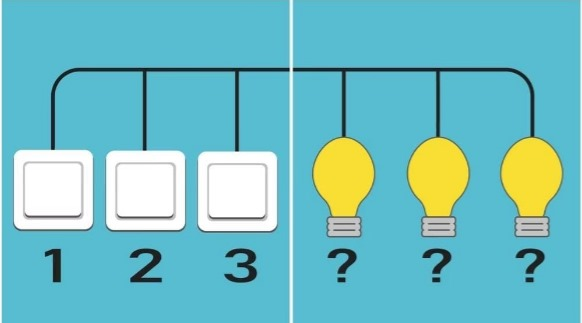

Te afli într-o cameră cu trei întrerupătoare care sunt în poziția "închis". Fiecare dintre cele trei întrerupătoare corespunde unuia dintre cele trei becuri din camera alăturată. În timp ce te afli în camera cu întrerupătoare, nu poți vedea ce se întâmpla în camera cu becuri. Știind că poți intra doar o singura data în camera cu becuri, cum să afli care întrerupător cărui bec îi corespunde?
